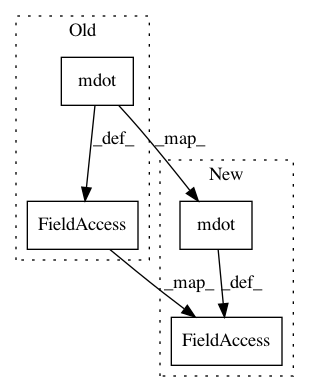

5f2c2a04f812d0b5cc05b9b932bdd51c94a5b5df,GPy/models/uncollapsed_sparse_GP.py,uncollapsed_sparse_GP,_computations,#uncollapsed_sparse_GP#,46
Before Change
self.psi1V = np.dot(self.psi1, self.V)
self.psi1VVpsi1 = np.dot(self.psi1V, self.psi1V.T)
self.Kmmi, self.Lm, self.Lmi, self.Kmm_logdet = pdinv(self.Kmm)
self.A = self.beta * mdot(self.Lmi, self.psi2, self.Lmi.T)
self.B = np.eye(self.M) * self.A
self.Lambda = mdot(self.Lmi.T,self.B,self.Lmi)
self.trace_K = self.psi0 - np.trace(self.A)/self.beta
self.projected_mean = mdot(self.psi1.T,self.Kmmi,self.q_u_expectation[0])
After Change
self.psi1V = np.dot(self.psi1, self.V)
self.psi1VVpsi1 = np.dot(self.psi1V, self.psi1V.T)
self.Kmmi, self.Lm, self.Lmi, self.Kmm_logdet = pdinv(self.Kmm)
self.A = mdot(self.Lmi, self.beta*self.psi2, self.Lmi.T)
self.B = np.eye(self.M) + self.A
self.Lambda = mdot(self.Lmi.T,self.B,self.Lmi)
self.trace_K = self.psi0 - np.trace(self.A)/self.beta
self.projected_mean = mdot(self.psi1.T,self.Kmmi,self.q_u_expectation[0])
In pattern: SUPERPATTERN
Frequency: 3
Non-data size: 4
Instances
Project Name: SheffieldML/GPy
Commit Name: 5f2c2a04f812d0b5cc05b9b932bdd51c94a5b5df
Time: 2012-12-08
Author: james.hensman@gmail.com
File Name: GPy/models/uncollapsed_sparse_GP.py
Class Name: uncollapsed_sparse_GP
Method Name: _computations
Project Name: SheffieldML/GPy
Commit Name: 7b0d0550cb01f0c4eca567e80f950e7f54ecb7b2
Time: 2013-03-22
Author: alan.daniel.saul@gmail.com
File Name: python/likelihoods/Laplace.py
Class Name: Laplace
Method Name: fit_full
Project Name: SheffieldML/GPy
Commit Name: b56de4762e3be08f356a921b352b521e1751190b
Time: 2012-12-16
Author: james.hensman@gmail.com
File Name: GPy/models/uncollapsed_sparse_GP.py
Class Name: uncollapsed_sparse_GP
Method Name: _computations